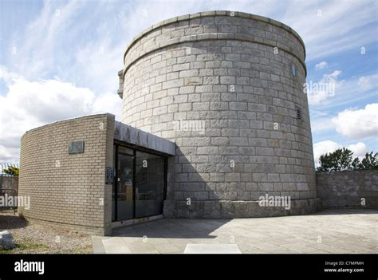

Martello tower in Sandycove, Dublin where Gogarty lived briefly with James Joyce and which was
the location of the opening episode of Joyces famous novel, Ulysses,
now the site for the James Joyce museum (wwww.alamy.com).
Bibliography
- Hyperthuleana (1916)
- Blight: The Tragedy of Dublin (1917)
- Secret Springs of Dublin Song (1918)
- The Ship and Other Poems (1918)
- A Serious Thing (1919)
- The Enchanted Trousers (1919)
- An Offering of Swans (1923)
- An Offering of Swans and Other Poems (1924)
- Wild Apples (three versions: 1928, 1929, 1930)
- Selected Poems (1933)
- As I Was Going Down Sackville Street (1937)
- Others to Adorn (1938)
- I Follow St. Patrick (1938)
- Elbow Room (two versions: 1939, 1942)
- Tumbling in the Hay (1939)
- Going Native (1940)
- Mad Grandeur (1941)
- Perennial (two versions: 1944, 1946)
- Mr. Petunia (1946)
- Mourning Became Mrs. Spendlove (1948)
- Rolling Down the Lea (1949)
- Intimations (1950)
- Collected Poems (1951)
- Unselected Poems (1954)
- It Isn't This Time of Year At All!: An Unpremeditated Autobiography (1954)
- Start From Somewhere Else (1955)
- A Weekend in the Middle of the Week (1958)
- The Poems & Plays of Oliver St. John Gogarty (containing rare and unpublished material, 2001)